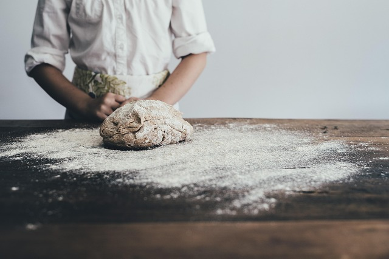

OUR STORY
ANGU’s BAKERY is a family-run artisan bakery which prides itself on using traditional methods to create delicious, handmade breads, pastries and celebration cakes.
Our craft bakers use traditional skills and methods to hand create a range of artisan breads known for their excellence due to the quality of the ingredients used in each loaf.
Established in thulamahashe in 2023, we now also have Bakery & Coffee Shops in rolle, thulamahashe, bushbuchridge, mp stream and agincourt.
Each coffee shop serves a range of fresh food options throughout the day,
With the focus on using only the highest-quality ingredients to provide healthy,
Wholesome and nutritious lunches and dinners — as well as our signature sandwich range made from our own artisan breads
and mouth-watering pastries and cakes for every celebration